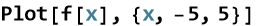
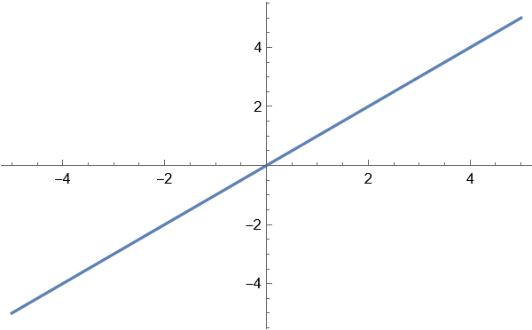
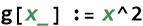
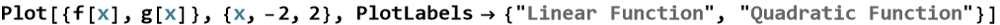
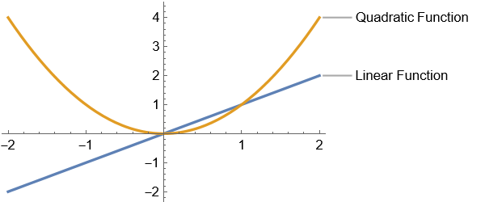
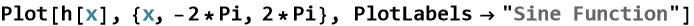
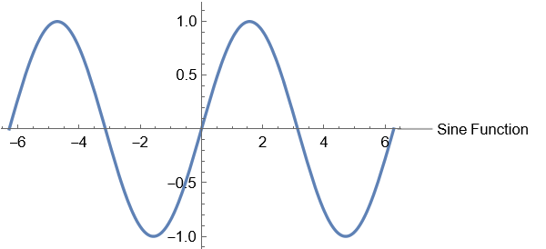

Plotting Functions
Representing, Evaluating, and Graphing Functions
Author: Jose M Serra Jr
In this section we will be discussing the ability to represent, evaluate, and graph functions using Wolfram Mathematica . In this section we will program rational, and irrational functions .
In the line above we programmed a linear equation with a slope of one, and a y - intercept of zero . Now we will plot the function from an interval of [-5,5].


As we can see above there is a linear function continuous on the given domain . Now we will program a quadratic equation using the same interval.

Now we will plot both at the same time using the same graph in a different interval from [-2,2].


Another function that we will plot now is Trigonometric in Radians.

